Рогалик про дев’ятиповерхівку на механічних ногах, її мешканців і місто, яке щоразу повертається до 04:17. Ти керуєш будинком, збираєш нову зброю, рятуєш сусідів, розставляєш їх по квартирах і б’єшся з машинами. Цей путівник пояснює керування, правила, прогрес і режими без жодних сюжетних спойлерів.
Відкрий гру: ти потрапиш у хаб. Угорі вибір голови ОСББ: на початку відкритий лише Петрович, інших відкривають повні експедиції (див. розділ 9). Під вибором героя видно його вміння на клавіші E. Кнопка «Вирушити в рейд» запускає експедицію; якщо рейд уже триває, вона зветься «Продовжити рейд».
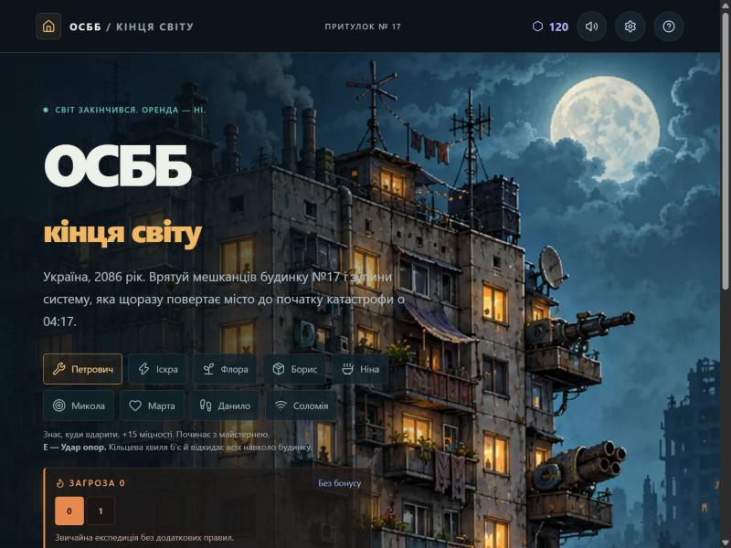
Нижче в хабі: «Наступна ціль» (що ти відкриєш наступним), картки режимів («Денний забіг», «Нескінченна експедиція»), «Майстерня», «Кодекс», «Історія», «Справа 04:17», «Досягнення» й «Статистика».
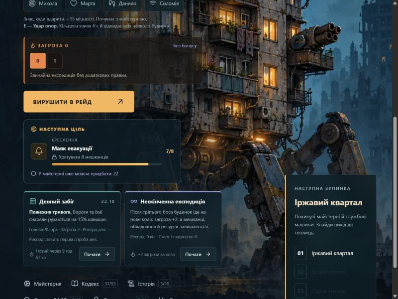
| Рух | Ривок | Вміння героя | Пауза | |
|---|---|---|---|---|
| Клавіатура | WASD або стрілки | Пробіл | E | P або Esc |
| Телефон | джойстик «РУХ» у лівому нижньому куті | кнопка «РИВОК» | кнопка вміння праворуч (на малюнку «УДАР») | кнопка «Пауза» вгорі праворуч |
| Геймпад | лівий стік або хрестовина | A чи правий тригер | B чи правий бампер | Start |
Будинок стріляє сам: ти лише рухаєшся, збираєш здобич і вирішуєш, коли вдарити ривком чи вмінням. Перезарядка вміння в усіх героїв однакова: 12 секунд (перк «Короткий гніт» скорочує її на 3 с за рівень). Вона видна на кнопці. Гра автоматично ставить паузу, коли вікно втрачає фокус.
Під час заставки боса чи міні-боса бій стоїть: торкнись екрана, натисни Space, E або Enter, і заставка скоротиться (не раніше, ніж через півсекунди).
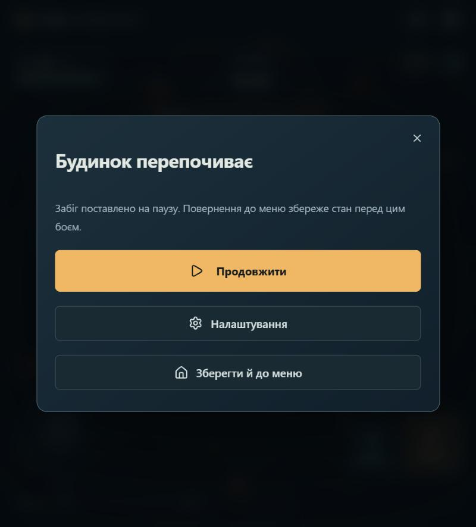
Кожна з трьох локацій (Іржавий квартал, Зелені куполи, Серце мережі) має карту на 10 кроків. Це випадкове дерево: 38–49 кімнат, на кожному кроці 3–6 вузлів, шляхи розгалужуються й зливаються, наприкінці бос. Натисни вузол, щоб побачити, що в ньому, а потім «Рушити сюди». Вибір відсікає інші гілки наступного кроку, тож маршрут треба планувати.
| Кімната | Що там |
|---|---|
| Бій | розбий загін: три хвилі й ватажок; нагорода: модуль, монети й брухт |
| Еліта | загін без передишок: хвилі накочуються одна на одну, стрільці цілять на випередження; вищий шанс на рідкісний модуль |
| Мінібос | окремий сильний ворог зі своїми атаками; за перемогу предмет на вибір, монети й 4 брухту |
| Подія | зустріч, ризикована угода чи знахідка: ти вирішуєш, як діяти |
| Скриня | рівно один випадковий предмет із повного каталогу: обладнання або меблі |
| Магазин | витрать монети на модулі або ремонт будинку |
| Перепочинок | віднови міцність або збери ресурси перед наступним боєм |
| «?» | невідома кімната: може бути бій, еліта, магазин, подія, перепочинок, скриня чи мінібос; результат відкриється при вході |
| Бос | чекає на 10-му кроці; після перемоги історія продовжується й з’являється карта наступної локації |
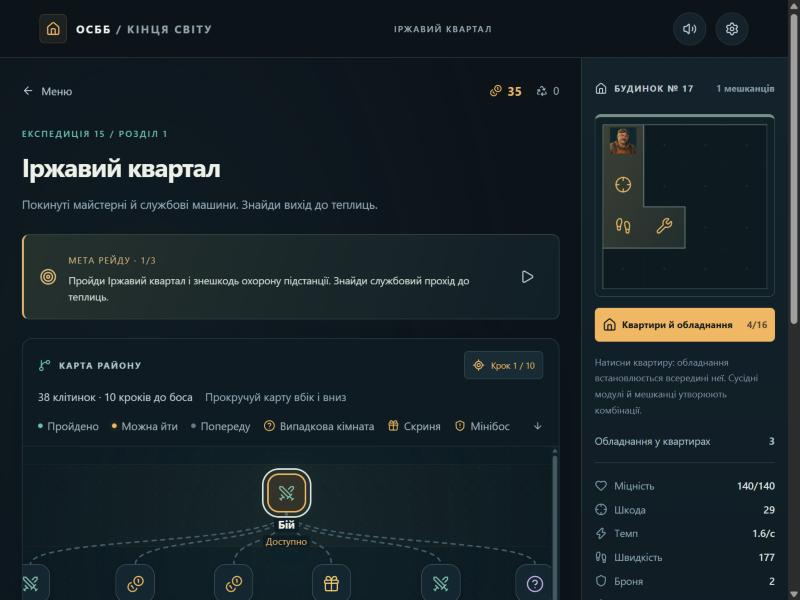
У бою ти бачиш: міцність будинку, годинник хвилі, монети, рівень і шкалу досвіду, лічильник вбивств і серію (комбо). Збирай монети й брухт: що більший радіус збору (магніт), то менше бігати. Серія знищень без паузи понад 2,5 с підвищує монети до ×1,5.
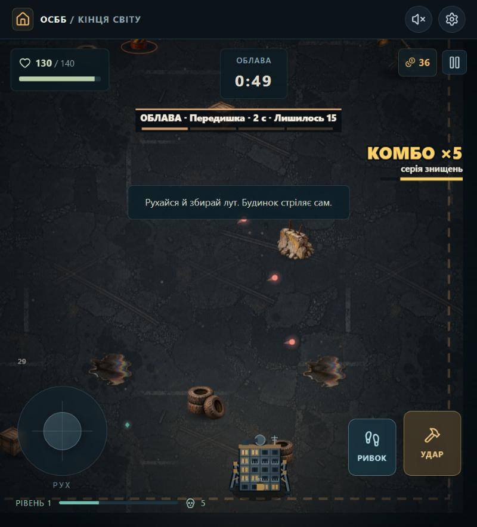
Коли шкала досвіду заповнюється, бій на мить зупиняється: три мешканці пропонують по одному перку. Перків 28, у кожного мешканця свої; багато мають рівні (1/3, 2/3…). Перки діють до кінця експедиції. Обирай те, що доповнює твій набір: наприклад, «Рикошет» передає влучання наступному ворогові, а «Заклепки» додають броню.
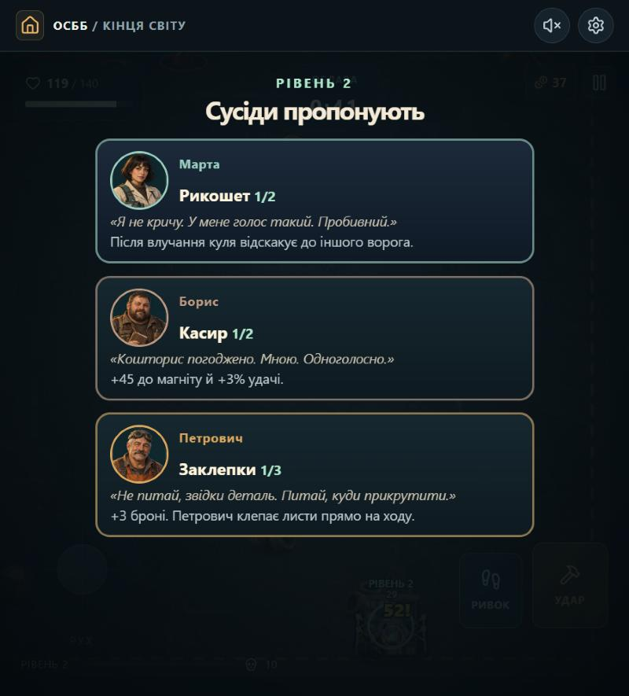
У кінці кожної локації чекає бос (на кожну локацію по три варіанти, випадковий). Перед боєм гра показує заставку: портрет у рамці, ім’я, місце, пораду «як перемогти» з описом атак, здоров’я лідера й репліку машини. Прочитай пораду: в ній пояснено, куди ступати. Мінібоси мають схожу, але коротшу заставку.
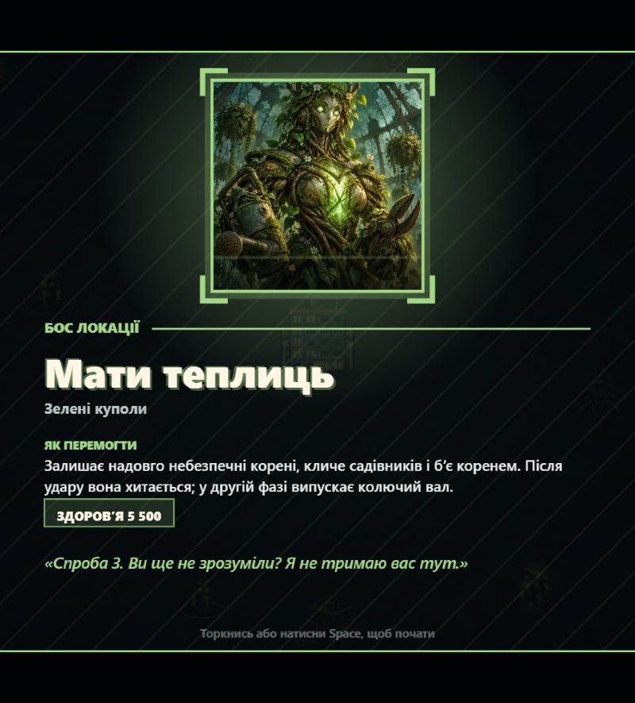
Бос має другу фазу з додатковою атакою. Коли він завдає важкого удару, він на мить оглушується й отримує більше шкоди: це найкращий момент для вміння.
У будинку живе дев’ятеро мешканців (одного з них ти граєш як голову). Врятованих після боїв і подій ти вселяєш у квартири плану поверху. Квартири фігурні: їх можна повертати, переставляти й об’єднувати. План починається з 4×4 і під час рейду розширюється до 5×4, 5×5 і 6×6 за 200, 360 і 520 монет.
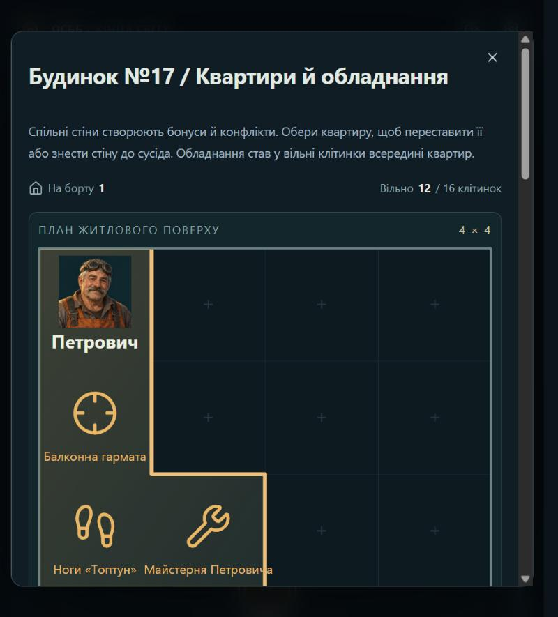
Перше ядро зброї за порядком гнізд озброює дах. Без ядра стріляє звичайна дахова гармата. Всього сім ядер. Якщо в сусідній клітинці лежить потрібний модуль, ядро еволюціонує (банер на початку бою). На картці ядра видно, який сусід потрібен.
| Ядро | Як стріляє | Еволюція | Потрібний сусід |
|---|---|---|---|
| Дробовик ЖЕК | віяло з п’яти дробин, ближній бій | Пральна картеч: сім дробин, що відкидають | Бойова пральня |
| Рейковий пробійник | повільний постріл крізь усю лінію | Гаус-рейка: кожен постріл критичний | Дід на балконі |
| Міномет з балкона | навісний снаряд у найгустіший натовп | Касетний міномет: після вибуху три малі бомби | Тесла на кухні |
| Дуговий трансформатор | миттєва блискавка, що перестрибує між трьома ворогами | Грозовий фронт: шість ворогів | Старий акумулятор |
| Монетомет | монети рикошетять тричі | Джекпот: ще один рикошет і +25% шкоди | Щасливий домофон |
| Газова колонка | струмінь полум’я впритул, вороги горять | Спалах спор: горіння вдвічі сильніше | Теплиця-хижак |
| Балконна ракетниця | повільна ракета, що наздоганяє ворога й вибухає по площі | Магнітний рій: дві ракети за залп | Магнітний пилосос |
Дев’ять голів ОСББ. Новий герой відкривається щоразу, коли ти проходиш повну експедицію (три локації й фінал): перший відкритий від початку, наступні після 1, 2, … 8 перемог. Кожен має особисте вміння на E (перезарядка 12 с), бонус і стартовий набір.
| Герой | Відкриття | Вміння на E | Бонус |
|---|---|---|---|
| Петрович, механік | з початку | Удар опор: кільцева хвиля б’є й відкидає всіх навколо | +15 міцності |
| Іскра, інженерка | 1 перемога | Розряд: блискавка між шістьма ворогами, оглушує їх | +15% темпу |
| Флора, ботанік | 2 перемоги | Цвітіння: лікує 12%, сповільнює й коле ворогів | +0,8 відновлення |
| Борис, комірник | 3 перемоги | Ревізія: забирає частку здоров’я ворогів, ×1,5 монет 5 с | +30 монет на старті |
| Ніна, кухарка | 4 перемоги | Окріп: усі навколо горять 3,5 с | +0,5 відновлення |
| Микола, вартовий | 5 перемог | Залп з даху: 16 куль на всі боки | +4 шкоди |
| Марта, медикиня | 6 перемог | Щеплення: два щити (до чотирьох) і 6% лікування | щит на початку кожного бою |
| Данило, кур’єр | 7 перемог | Експрес: скидає ривок, +40% швидкості на 4 с, мить невразливості | +20 швидкості |
| Соломія, радистка | 8 перемог | Глушилка: знищує ворожі снаряди поруч, оглушує двір | +60 дальності |
Кожна експедиція, навіть програна, приносить ядра: за пройдені локації, урятованих мешканців, міні-босів і бойові дані. У майстерні ти витрачаєш їх на креслення й модифікатори. Креслення розширюють список можливої здобичі (предмети не видаються на старті, а поточний рейд не змінюється); модифікатор купується один раз і діє в кожному наступному рейді.
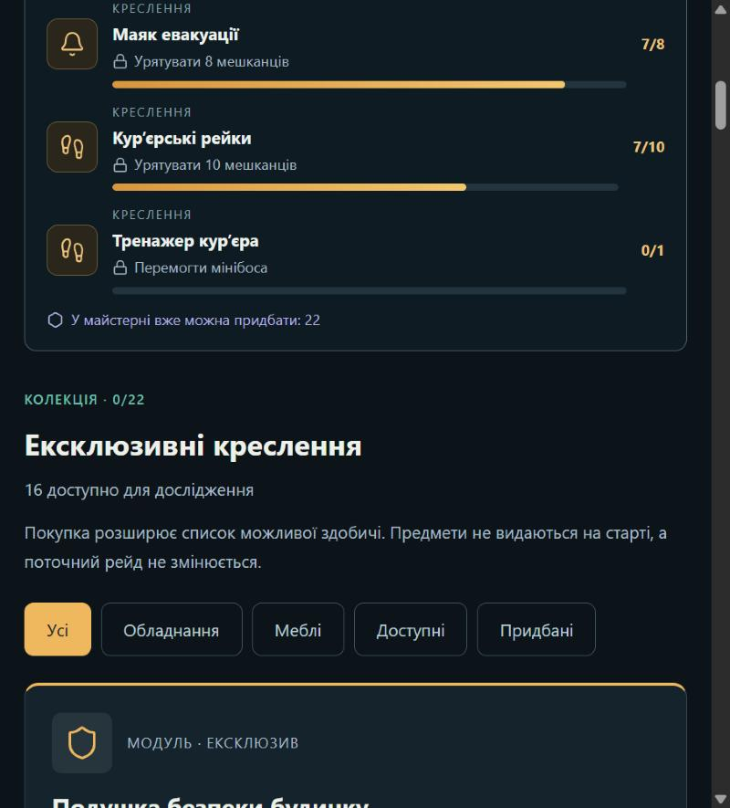
Кодекс показує всі знайдені предмети з умовами відкриття, рідкістю (рідкісний, епічний, легендарний) і сімейством. Досягнення (43), статистика і «Наступна ціль» з’являються в хабі.
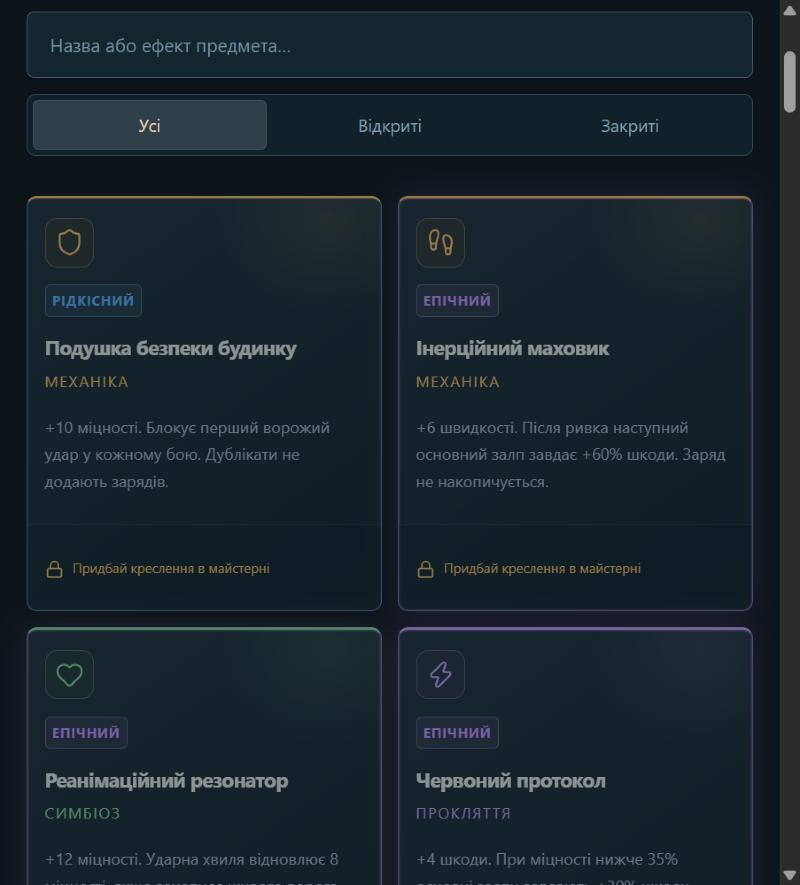
Історія розповідається діалогами з портретами мешканців та озвучена. Частина сцен відкривається по ходу рейдів, частина в Притулку між ними; після першої перемоги кожним героєм у Притулку розповідається його короткий епілог. Усі сцени, що ти вже бачив, можна переглянути в «Історії». Справа 04:17 збирає докази, від яких залежить, яку з трьох кінцівок ти зможеш обрати. Їх не розкрито тут навмисно.
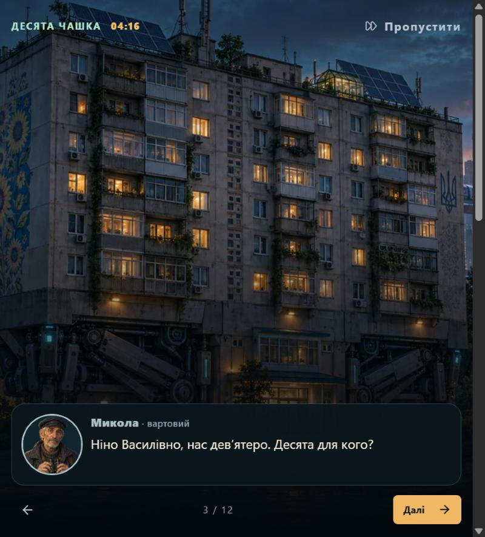
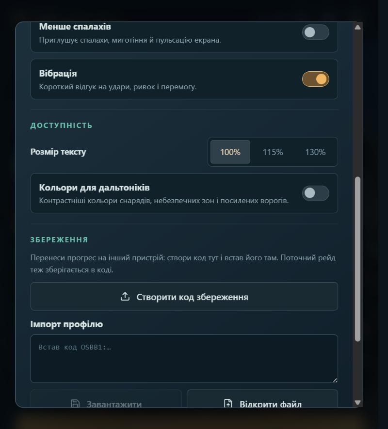
| Параметр | Що робить |
|---|---|
| Музика, ефекти, голоси | окремі повзунки гучності; кнопка вимкнення звуку є в шапці |
| Тряска екрана | 0, 50 або 100% |
| Числа шкоди | показувати чи ні шкоду над ворогами |
| Менше спалахів | приглушує спалахи, миготіння й пульсацію екрана |
| Вібрація | короткий відгук на удари, ривок і перемогу (на телефоні) |
| Розмір тексту | 100, 115 або 130%; весь інтерфейс масштабується |
| Кольори для дальтоніків | контрастніші кольори снарядів, небезпечних зон і посилених ворогів; зони стають однокольоровими з темним контуром |
| Перенесення прогресу | код збереження OSBB1:… (копіювання або файл) і імпорт; перед імпортом поточний профіль зберігається як резервна копія |
Прогрес зберігається в самому браузері чи застосунку, на одному пристрої. Щоб перенести його на інший, створи код збереження в налаштуваннях і встав його там.